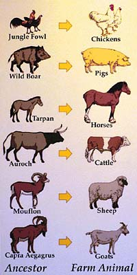

History of Livestock Production
The livestock industry began in the middle east about 10000 years ago, when humans first domesticated animals.
Near the end of the Pleistocene, about 12000 years ago, there were many global environmental changes. These changes, coupled with the ever-increasing human population densities, forced humans to adjust their lifestyle. The universal response was to develop means to acquire more resources from the same geographical location (intensification). Some groups of people broadened their subsistence base, including fish, shellfish, snails, and new plant species to their diets. Other groups began producing food through planting and harvesting crops and bringing animal species under human control - domestication. (C.J.Jolly, R. White 95). Agriculture began about 10000 years ago in the middle east. The change from a hunter-gatherer system to a settled society resulted in an increased quantity of food available, and the ability to store the surplus. Food production also caused a division of labour; because everyone wasn't involved with food production, there was time for other pursuits. The first domestic animal was the dog ... specifically, the European grey wolf 12000 - 14000 years ago, Eurasia.
|

In the process of domestication, humans receive many benefits from the animals, and, humans provide the animals with benefits of food, shelter, freedom from predators, affection, and a humane death, which is not necessarily the case in the wild. Animal domestication likely began around 12000 years ago. Domestication involves much more than simply taming an animal. Animals with social structures similar to humans (leader and submissive pack) are the easiest to domesticate. This is due to the ability for the human to be substituted for the "pack leader" as is the case for the domestication of the dog.
|